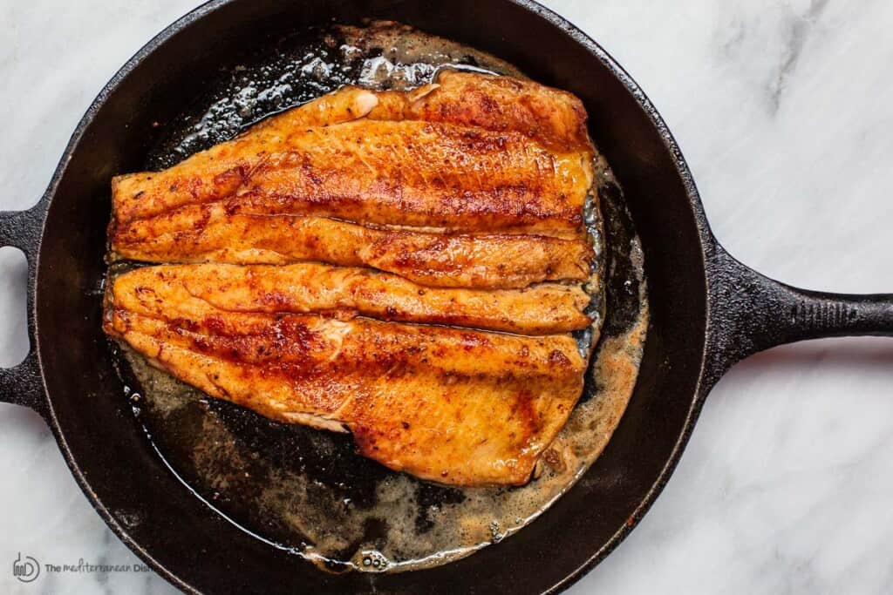

Pan Seared Trout

Delicious Pan Seared Trout
Trout is a delicate and mild-tasting fish that most people enjoy. And because trout
fillets are thin, you can season them and throw them in a skillet to cook in a little
extra virgin olive oil.
Ingredients
- 1 ½ tsp ground coriander
- 1 tsp sweet paprika
- 1 tsp all-natural garlic powder (or 1 to 2 teaspoon garlic paste)
- 1 ½ lb trout fillet (or butterflied trout fillet as in the pictures)
- All-purpose flour for coating (no more than ½ cup)
- Extra virgin olive oil (I used Private Reserve Greek EVOO)
- Salt and pepper: Add this in to your preferred taste.
Steps
- Mix the coriander, paprika, and garlic powder in a small mixing bowl.
- Pat the trout fillet dry. Sprinkle with salt and black pepper on both sides, then season with the spices on both sides.
- Coat the seasoned fish with the flour, shake off any excess flour (you only want a very thin layer).
- In a large cast iron skillet, heat about 3 to 4 tablespoon olive oil over medium-high heat until shimmering but not smoking (see note). Sear the trout fillets for 3 minutes on each side (start with skin-side down, and use a spatula to very carefully flip the fish fillets over).
- Remove the fish from the pan and place it on a tray lined with paper towel to absorb any excess oil.
- Transfer to serving platter and finish with a squeeze of fresh lime juice.